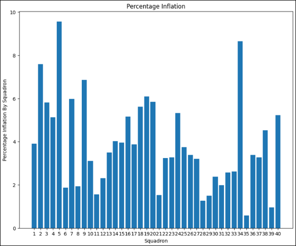

My Projects
Explore the projects I've worked on, showcasing my skills in data science, problem-solving, and more.
Web App for Fairer Stratification
As Squadron Commander, I was faced with the challenge of ranking every cadet in my squadron in a process known as "Stratification." This process is usually highly subjective and leaves people frustrated with the squadron and the Academy as a whole, lowering unit morale. This app implemented an iterative-reranking methodology that solved two of the biggest issues with the stratification process: choice overload and inconsistent ratings.
This app solves these problems by presenting the user with a series of head-to-head comparisons, where the user must choose which package is better. Then, on the back end, a score is updated, using the same ranking algorithm as professional chess. This project is an example of how data science can make outcomes more fair and processes more effective.
Due to the ongoing usage of the app and its containment of personally identifiable information, I can't add a link. However, here is a screenshot of the frontend.

Process Optimization and Data Policy Research at Air Force Central Command (AFCENT)
During the summer of 2024, me and another cadet integrated with civilian and military data scientists in AFCENT Headquarters helping to optimize aircraft deployments during the Israel-Hamas crisis. We developed a program to aggregate data more efficiently saving dozens of hours each week and helping provide near real time data to the AFCENT commander and the Chairman of the Joint Chiefs of staff. We also helped shape AFCENT policy, providing inputs on policies such as API standards the creation of a command wide data catalogue. This research experience taught me the incredible value that a relatively simple program can have when deployed in the right place as well as the need for policies that support the implementation of such programs.
.jpg)
News Scraping and Summarizing Web App
This app was one of the first programs I ever deployed for widespread usage. While doing research with the Colorado Springs Space Information Sharing and Analysis Center, I realized they could automate large portions of their workflow by identifying and summarizing relevant news articles automatically. This app automates the scraping process and connects to the OpenAI API, returning articles relevant to given keywords and providing summaries of specified lengths.
This project demonstrates how data science can automate time-consuming processes, freeing analysts to do more impactful work and allowing non-profits to use limited resources more effectively.
View ProjectGrader Fidelity Data Analytics
As the Standardization and Evaluations Element Leader, I was tasked with grading military knowledge tests. Being concerned about the standardization across the school, I built a python script that analyzed more than 10,000 tests, comparing the correct answer, the given answers, and the scores assigned by the grader. Using this process, I found hundreds of innaccuracies, inflating scores in some squadrons. Because of the inherently competitive nature of the Academy, this was equivalent to deflating the scores of squadrons with fair graders, and had a detrimental impact on the cadets' ability to get their career and base preferences. This program allowed me to analyze data on a scale that would be impossible for a single person and make the system fairer and more consistent for everyone.
Offensive Cyber Research and Development

This project worked on imagesthe development of offensive cyber programs for the U.S. military, combining state of the art open source LLM technology with common cyber offensive tools to effectively access adversary networks or conduct securtiy tests on friendly ones. In conjunction with 2 other cadets, I hosted and finetuned an LLM to ingest email data and return convincing responses. We built an API, which was accessed by an executable to run on the target's computer, sending realistic spam emails capable of delivering and executing code. This project leveraged the power of LLMs in the cyber domain, proving that conventional techniques like spam emails can be effective when combined with LLM technology.
Infrastructure Reliability Research and Modelling
In collaboration with a team of data science and civil engineering majors, I helped model infrastructure failure rates at Buckley Space Force base. By drawing on industry data and insights from maintenance professionals, we built a Monte Carlo simulation to determine which components were most likely to fail. This project provided insights into infrastructure reliability, critical for long-term planning and resource allocation. This project was one of my first steps into data science, and showed the potential for rigorous predictive modelling to save taxpayer dollars and finite labor, resulting in a more effective and efficient mission.